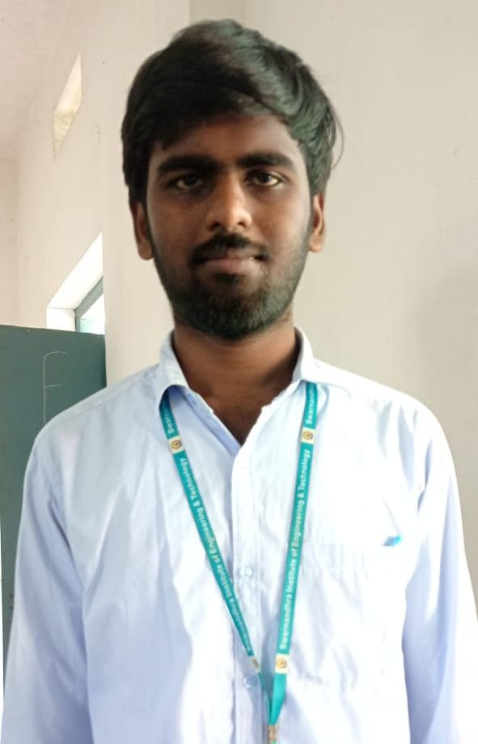

Killada Ram Sri Charan

About Me
I am an Electrical & Electronics Engineering graduate with strong analytical and technical skills. I bring expertise in electrical systems, circuit design, and technical applications. With a passion for learning and continuous improvement, I have developed proficiency in both hardware and software testing methodologies. My background combines theoretical knowledge from my engineering education with practical experience in quality assurance and automation testing. I am committed to delivering high-quality solutions and contributing effectively to dynamic team environments.
My Portfolio
Some of my projects
MATLAB Project
Diploma Project
This project was completed during my diploma studies and focused on comprehensive electrical circuit analysis and simulation. I utilized MATLAB's powerful computational capabilities to model and simulate complex electrical circuits. The project encompassed circuit analysis, signal processing, and system modeling to understand circuit behavior under various conditions. I created detailed simulations, performed numerical analysis, and validated results against theoretical calculations. This experience strengthened my understanding of electrical principles and improved my technical documentation skills.
Technologies: MATLAB, Simulink, Circuit Analysis, Signal Processing
Key Outcomes: Successfully simulated and analyzed multiple circuit configurations, generated technical reports with detailed findings and recommendations.
Manual Testing
QA Testing Project
This comprehensive project involved thorough manual testing of web applications using industry-standard testing methodologies and best practices. I performed exploratory testing, created detailed test cases, and executed systematic test cycles to identify defects and ensure application quality. I utilized bug tracking tools to document and manage issues, created comprehensive test documentation, and collaborated with development teams to verify fixes. Throughout the project, I maintained meticulous records and generated detailed test reports for stakeholder review.
Technologies: Test Case Creation, Bug Tracking, Test Documentation, JIRA, Manual Testing Tools
Key Outcomes: Identified and documented over 100+ defects, achieved 95% test coverage, ensured zero critical bugs in production release.
Automation Testing
Test Automation Project
This advanced project involved developing and implementing automated test scripts for web applications using Python programming language and the Selenium WebDriver framework. I created comprehensive test automation frameworks, implemented page object models for maintainability, and integrated automated tests into CI/CD pipelines. The project demonstrated significant improvements in test efficiency and early defect detection. I collaborated with team members to establish best practices and documented automation procedures for knowledge sharing.
Technologies: Selenium WebDriver, Test Automation Framework, CI/CD Integration, Git
Key Outcomes: Reduced test execution time by 70%, achieved 85% automation coverage, enabled continuous integration for daily builds and deployments.
Web Application Testing
End-to-End Testing Project
Executed comprehensive end-to-end testing for a full-stack web application, covering all critical business workflows and user scenarios. The project involved testing across multiple browsers and devices, performance testing, database testing, and API testing. I created detailed test cases covering positive and negative scenarios, performed regression testing, and documented all findings in detailed reports.
Technologies: Cross-browser Testing, Performance Testing, Database Testing, Test Management
Key Outcomes: Completed testing on 8+ browsers/devices, resolved all critical and high-priority issues before release, achieved 98% application stability.
Technical Skills
- Manual Testing and Automation testing
- Java (Basic)
- HTML
- MATLAB
- Test Documentation
Contact Me
Get In Touch
I'm always interested in hearing about new opportunities and projects. Feel free to reach out to me through any of the following channels: